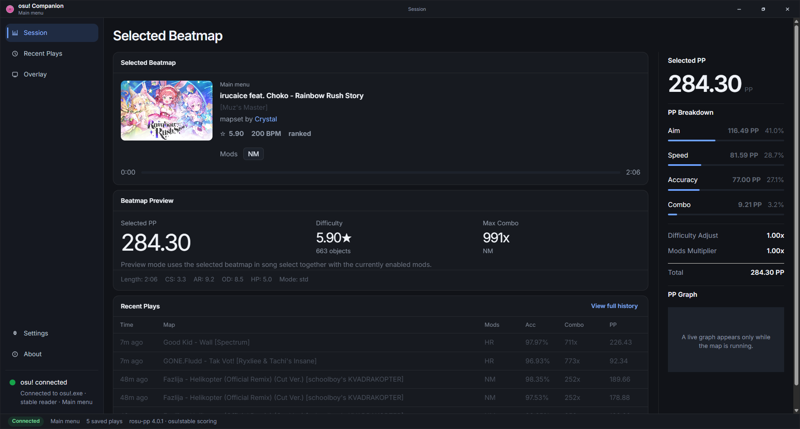

Windows companion для osu!stable
Osuwapp
Отслеживает live PP, выбранную карту и последние игры, а также показывает настраиваемый overlay поверх osu!stable.

Основное
Live PP
Текущий PP, accuracy, combo, hit counts и разбивка по компонентам.
Карта в фокусе
Показывает выбранную карту и считает preview PP в song select.
История игр
Сохраняет последние результаты между запусками приложения.
Overlay
Отдельные блоки для PP, статистики, попаданий и текста карты поверх игры.
Последняя версия
Прямая загрузка установщика Windows из последнего опубликованного релиза.